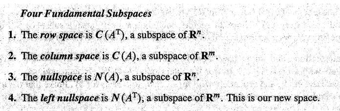
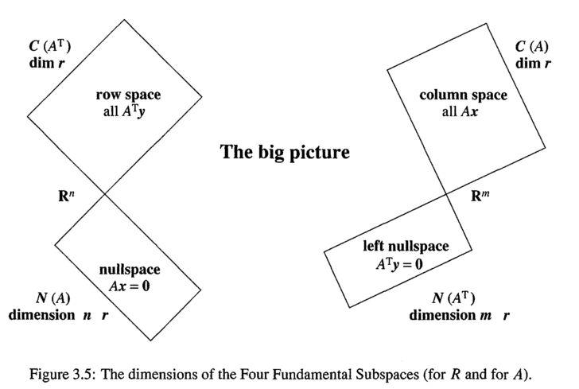
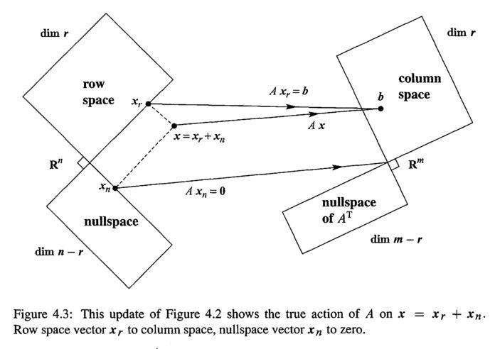

从sympy求最简形矩阵到矩阵的四个子空间及其联系¶
行最简的意义
利用初等行交换将矩阵化为行最简形矩阵，行最简形矩阵在求逆矩阵、求解矩阵方程、求解线性方程组、求矩阵与向量组的秩、求向量组的极大无关组、求矩阵的特征值与特征向量等方面具有关键作用。
对任意一个矩阵 \( A_{m\times n} \) 来说（本文只考虑实矩阵）,均有四个空间与其对应，他们分别是列空间（column space）、行空间（row space）、零（核）空间（nullspace or kernel space）、左零空间（left nullspace）。熟悉这些空间的性质及其联系能帮助我们在脑海中建立一个舞台,线代中的一些重要内容便是在这个舞台上展开的，比如线性方程组（linear equation system） \( Ax=b \) 解的情况、奇异值分解（SVD）的几何直观。

Part 1 Four Subspaces¶
考虑一个矩阵 \( A_{m\times n} \) ，不妨设其行阶梯形矩阵为 \( R_{3\times 5}= \left[ \begin{matrix} 1&3&5&0&7\\ 0&0&0&1&2\\ 0&0&0&0&0 \end{matrix} \right] \) ， 其主元分别在在1-1th, 4-2th两个位置。主元数目在取值上与矩阵的秩相等，所以 \( r=rank(A)=rank(R)=2 \) 。
1.1列空间的维度与秩相等¶
列空间（column space）就是由矩阵的列向量组张成的空间。
此处为 \( column_1=(1,0,0) \) 和 \( column_4=(0,1,0) \) 张成的空间。那么 \( column_2,column_3,column_5 \) 为什么不作为基向量呢？因为这三个向量可以由 \( column_1 \) ， \( column_4 \) 线性表示，在三维空间中表现为与这两个基向量共面，用它们作为基的一部分不能扩展基向量组的表达能力，根据奥卡姆剃刀原理舍弃它们。
\( (1,0,0)和(0,1,0) \) 构成的无疑是一个3维空间中的（2维）平面，正好维度与rank(R)相等。观察我们选取的基向量 \( column_1 \) 和 \( column_4 \) ，他们是主元所在的列，也称为 pivot columns
1.2行空间的维度与秩相等¶
行空间（row space）就是由矩阵的行向量组张成的空间。
此处为 \( row_1=(1\ 3 \ 5 \ 0 \ 7) \) 和 \( row_2=(0\ 0 \ 0 \ 1 \ 2) \)张成的空间， \( row_3 \) 为零向量，并不能作为空间的基向量（basis vector）。虽然行向量有5个元素，看似是在一个5维的空间中，但实际上因为我们的基向量只有两个，它们只能张成一个嵌套在5维空间中的2维子空间。我提供一个理解的思路，空间中任意向量由该空间基向量的线性组合表示，即 \( \forall r\subset rowspace, \exists \ a,b\subset \mathbb{R} , r=a\cdot row_1+b\cdot row_2 \) ，这个式子意味着我们可以用 向量 \( (a,b) \) 来 唯一标识 \( r \) , \( (a,b) \) 只有两个元素，所以 实际上 \( r\subset \mathbb{R^2} \) 。
再观察下我们选的基向量 \( row_1 \) 和 \( row_2 \) 实际上是主元所在的行，这样的行称为 pivot rows
1.3零空间的维度等于列数减去秩（n-r）¶
零空间（nullspace or kernel space）是 \( Ax=0(\Leftrightarrow Rx=0) \) 的全部解所构成的空间。
为了形象直观，我们先来讨论下 \( Rx=0 \) 的解。 \( \left[ \begin{matrix} 1&3&5&0&7\\ 0&0&0&1&2\\ 0&0&0&0&0 \end{matrix} \right]\cdot \left[ \begin{matrix} x_1\\x_2\\x_3\\x_4\\x_5 \end{matrix} \right]= \left[ \begin{matrix} 0\\0\\0 \end{matrix} \right] \) ,第一列和第四列含有主元，为 pivot columns， 其对应的 \( x_1 \) 和 \( x_4 \) 称为 pivot variables。 其他三列不含主元，称为 free columns, 相应的 \( x_2,x_3,x_5 \) 则称为 free variables，free variables可以自由取值，分别取三组值 \( (1，0，0) \) ， \( (0，1，0) \) ， \( (0，0，1) \) ，将三组值分别回代入方程，可解得相应的 \( x_1,x_4 \)。这样 \( x_1\sim x_5 \) 的值就都知道了，我们可以写出方程 \( Rx=0 \) 的解向量 \( s_2,s_3,s_5 \)
\( s_2=\left[ \begin{matrix} -3\\1\\0\\0\\0 \end{matrix} \right] \) , \( s_3=\left[ \begin{matrix} -5\\0\\1\\0\\0 \end{matrix} \right] \) , \( s_5=\left[ \begin{matrix} -7\\0\\0\\-2\\1 \end{matrix} \right] \) ，这三个向量被称为 special solutions。
容易验证， \( s_2,s_3,s_5 \) 的任意线性组合 \( s=a\cdot s_2+b\cdot s_3+ c\cdot s_5(a,b,c \subset \mathbb{R}) \) 也为 \( Rx=0 \) 的解，这意味着以 \( s_2,s_3,s_5 \) 为基的空间中任一向量 \( s \) 是 \( Rx=0 \) 的解。这个以 special solutions为基的空间就是 \( R(or\ A) \) 的kernel space。
1.4左零空间的维度等于行数目减去秩（m-r）¶
左零空间 （left nullspace）是 \( R^\top y=0(\Leftrightarrow y^\top R=0) \) 的全部解所构成的空间。
零空间定义中是未知向量右乘 \( R \) ，而这里是未知向量左乘 按照 1.3的方法进行讨论可得：
以 \( R^\top y=0 \)的m-r个 special solutions为基的空间就是 left nullspace。
上面的讨论是用A的行阶梯形矩阵R来作讨论的，一些人肯定会提出疑问？我们讨论的是R的四个子空间，这不代表A的四个子空间也具有相同的性质，其实可以证明A和R的子空间的维度是相同的。可参考 Introduction to linear algebra 4th edtion p186-p189, The Four Subspace for \( A \)
Part 2 四个子空间的联系¶
 图1
2.1 四个子空间的正交性(orthogonality)¶
起初看到这张图时我并不是很理解，但从直观上可以看出它是想表达 \( row\ space\bot null\ space \) , \( column\ space\bot left\ null\ space \)
在我们证明它们之前，首先，我们得知道 向量垂直的定义:
若两向量内积为0，即 \( v^\top w=0 \) ，则称 \( v \bot w \) .
将这个垂直（perpendicular）的概念从向量的层次扩展到空间的层次，给出以下定义：
定义一：Two subspaces \( V \) and \( W \) of a vector space are orthogonal if every vector \( v \) in \( V \) is perpendicular to every vector \( w \) in \( W \)
举个栗子，垂直于一张平铺的纸（2-D空间）作该平面的法线（一条线是一个1-D空间），这两个空间即是垂直的。
** Theorem1: \( nullspace \bot rowspace \) Proof:**
根据nullspace的定义，我们有
\( \forall x\subset nullspace\ N(A) \) , \( Ax=\left[ \begin{matrix}row\ 1 \cdot x\\ \vdots \\row\ m \cdot x\end{matrix} \right] = \left[ \begin{matrix} 0\\ \vdots\\0\end{matrix}\right] \) ，即 \( row_i(i=1,2,\dots,m)x=0 \)
根据rowspace的定义，我们有 \( \forall r\subset rowspace, \exists数对a_1,a_2, \dots, a_m\subset \mathbb{R},使得r=a_1 row_1+ \dots+a_m row_m \)所以 \( r \cdot x=(a_1 row_1+ \dots+a_m row_m) \cdot x=0 \)
即nullspace中任一向量与rowspace中任一向量垂直。
由定义一知: \( nullspace \bot rowspace \)
上面证明了big picture中的左半部分，接着证明右半部分
** Theorem2: \( column\ space \bot left \ nullspace \) Proof:**
根据left nullspace的定义，我们有
\( \forall y\subset left\ nullspace,A^\top y=\left[\begin{matrix} column_1^\top \cdot y\\ \dots\\ column_n^\top \cdot y \end{matrix}\right]=\left[ \begin{matrix}0\\\.\\0 \end{matrix}\right] \)
即 \( column\ i^\top \cdot y=0 \)
根据column space的定义，我们有
\( \forall c \subset column\ space, \exists b_1,b_2,\dots,b_n \subset \mathbb{R},使得c=b_1column_1+\dots+b_ncolumn_n \)
所以 \( c^\top \cdot y=(b_1column_1^\top+\dots+b_ncolumn_n^\top) \cdot y=0 \)
因此： \( column\ space \bot left \ nullspace \)
2.2正交补(orthogonal complement)¶
在Part 1中我们知道了四个子空间的维度，其中 \( dim(row\ space)=dim(column\ space)=rank(A)=r\\ dim(nullspace)=n-r,dim(left-nullspace)=m-r \)
不难发现，当 \( A_{m\times n} \) 给定以后， \( m \) 和 \( n \) 也就给定了，它们就成了常量(constant)
\( dim(row\ space)+dim(nullspace)=n=constant \)
\( dim(column\ space)+dim(left-nullspace)=m=constant \)
这两个式子也意味着 \( C(A^\top)\cup N(A)=\mathbb{R^n},C(A)\cup N(A^\top)=\mathbb{R^m} \tag{1} \)
而 Part 2.1告诉我们 \( C(A^\top)\bot N(A),C(A)\bot N(A^\top) \tag{2} \) 不妨视 \( \\{\vec0\\} \) 为“空集” \( \phi \) ,根据空间垂直的定义 应该 可用反证法证得 \( C(A^\top)\cap N(A)=C(A)\cap N(A^\top)=\\{\vec0\\}:=\phi \tag{3} \)
这样一来 借鉴集合论中关于绝对补集合的定义 ，我们这样 理解四个子空间的正交补性质
\( C(A^\top)是N(A)在\mathbb{R^n}中的补集，C(A)是N(A^\top)在\mathbb{R^m}中的补集 \)
在 线性代数中，我们定义这样的成对空间互为正交补 。由正交补具有的特点可以 从另一角度 给出以下定义：
定义二：如果一个子空间 \( W \) 包含所有与子空间 \( V \) 垂直的向量，称 \( W \) 为 \( V \) 的正交补，记作 \( V^\bot \) (发音为"V perp")
** Theorem3: \( nullspace\ is\ the \ orthogonal\ complement\ of\ row\ space \)
Proof:
我们根据 定义二 来证明，那么待证命题转化为：
\( nullspace( \mathbb{R^{n-r}}) \) 包含 \( \mathbb{R^{n}} \) 中 所有 与 \( row\ space(\mathbb{R^r}) \) 垂直的向量
用反证法来证明这个全称命题，假设 \( \exists s\in \mathbb{R^n} \wedge s\bot row\ space,s \notin nullspace \) \( \because s \bot row\ space \therefore A \cdot s= \left[ \begin{matrix}row_1\\ \vdots\\ row_m \end{matrix} \right] \cdot s=\left[ \begin{matrix}0\\ \vdots\\ 0 \end{matrix} \right] \) ，即 \( s \) 是 \( Ax=0 \) 的解
根据 \( nullspace \) 的定义(由 \( Ax=0 \) 的全部解组成的空间)， \( s \in nullspace \) ,与假设矛盾。
故 \( \mathbb{R^n} \) 中 不存在** 与 \( row space \) 垂直而不在 \( nullspace \) 中的向量，即 \( \mathbb{R^n} \) 中所有与 \( rowspace \) 垂直的向量都在 \( nullspace \) 中。
类似地可以证明
** Theorem4:** \( left\ nullspace\ is\ the \ orthogonal\ complement\ of\ column\ space \)
2.3 \( Ax=b \) 的几何意义¶
 图2
\( A_{m \times n}\cdot x_{n \times 1}=b_{m\times 1} \) 这个方程中， \( x \) 是 \( n \) 维的，行空间也是 维的。 \( b \) 是 \( m \) 维的，列空间也是 维的。 所以这个方程可以解读为将 \( \mathbb{R^n} \) 中的一个向量 \( x \) 映射到 \( \mathbb{R^m} \) 中, 同时注意到 \( x \) 由分别来自行空间和零空间的 \( x_r \) 和 \( x_n \) 构成，这两个空间是 \( \mathbb{R^n} \) 的子空间。而 \( b \) 来自列空间（ \( \mathbb{R^m} \) 的子空间）。我们在学习解方程 \( Ax=b \) 时总是分别求出一个 particular solution 和 special solutions,再将它们相加，这两个部分即 \( x_r \) 和 \( x_n \) 。
结合图2 思考 3.4节 （3.4The Complete Solution to Ax=b） 关于 \( Ax=b \) 解情况的判定（图3），可以从几何角度加深理解
 图3
图3
凡本网注明"来源：XXX "的文/图/视频等稿件，本网转载出于传递更多信息之目的，并不意味着赞同其观点或证实其内容的真实性。如涉及作品内容、版权和其它问题，请与本网联系，我们将在第一时间删除内容！
作者: 信息门下勃狗
来源： https://zhuanlan.zhihu.com/p/34056351